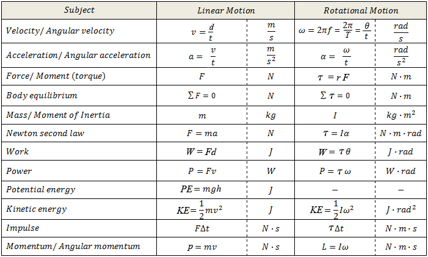

Rotation - Rotation Notes
It turns out rotational motion is almost identical to linear motion. If you know the structure of all your linear motion equations then you can translate the variables from linear to rotational (think of a foreign language, how you translate "I", "You", and "She/He" to the other language's versions of those same words).
The following image is a comparison of linear vs rotational variables and equations:
|  |
Let's start from the beginning, a review from what we spoke about briefy in simple harmonic motion. We said that we can have a circle with radius, r. If an arc length of a circle is the same length r (the same as the radius), the resulting angle is one radian:
 |
As you see above, it takes 2π or 6.28-ish radians to go all the way around. In rotational motion, we care about the rotation distance traveled, otherwise referred to as the angle, θ (theta). To state this again: the angle, θ, can go from 0 to 2π radians before it repeats back at 0.
How fast you change that angle (θ) is the angular velocity, ω (omega). That means θ divided by time.
How fast you change angular velocity (ω) is called angular acceleration, α (alpha). That means ω divided by time.
Do you remember the following examples?
a) Calculate the angular velocity of a clock's second hand. State in rads/s.
b) Calculate the angular velocity of a clock's minute hand.
c) Calculate the angular velocity of a clock's hour hand.
Well, I put them on your homework, so you might as well do them there.
Something to think about:
A bicycle odometer (which counts rpm and is calibrated to report distance traveled) is attached near the wheel axle and is set up for a certain size wheel. What happens if you use a smaller wheel?
At this point, please go here to login and complete your first set of homework.
FYI, how to convert from Rotational Motion to Linear Motion: simply multiple θ, ω, or α by the radius.
Torque
Torque is a rotating force. Otherwise stated as a force that produces rotational or angular acceleration.
The equation is radius times Force, but it is technically a cross-product. This means you need the force that is perpendicular to the radius, even if it is a component of the original applied force.
For us, torque and net torque are all about balance and equilibrium.
This is where we'll do some hands-on work. Grab a meterstick, a fulcrum, some clips, and some hanging masses. You will be answering these questions.
Make sure you also login and complete your second set of homework.
Here are some more torque practice problems.
Moment of Inertia
The resistance to change in rotational motion. It is the rotational analogue to mass. Here are two amazing links in case you find this page to be unclear:
A video about moment of inertia and how it is used
An explanation of what moment of inertia is

Previously we used the equation F = ma. Now, we will use the rotational form of this:
We will use many of the shapes above to answer mathematical questions, such as how much torque does it take to accelerate each shape? Or, what would the final angular velocity be if you applied a predetermined amount of torque to the object?
I think my favorite part of the concept of moment of inertia would be that because the mass distribution is different, it rotates at different speeds depending on the shape, which causes the following to happen:
| Four objects racing down an inclined plane (while rolling without slipping): red - hollow sphere orange - solid sphere green - hollow cylindrical ring blue - solid cylinder |
In the animation above, the time for each object to reach the finishing line depends on their moment of inertia. As each shape rolls without slipping down the incline, the initial gravitational potential energy is being converted into two types of kinetic energy: translational KE and rotational KE.
Can you prove the animation gets the rankings correct?